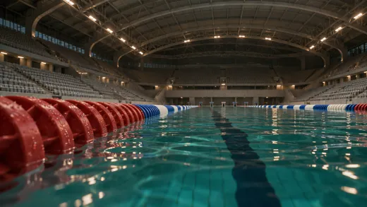
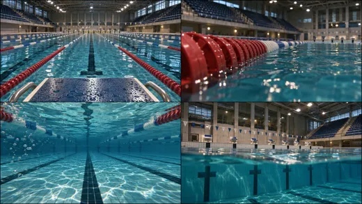

AI-generert illustrasjon · LIS-V01
Ved vannflaten
2026 · Stilprøve
Iscenesatt illustrasjon av en oppdiktet konkurransearena, laget til filmen.
AI-generert bassengskisse for filmprosjektet
Vis stort bildeAI-genererte bassengskisser laget til karrierefilmen. Begge viser oppdiktede svømmehaller.

2026 · Stilprøve
Iscenesatt illustrasjon av en oppdiktet konkurransearena, laget til filmen.
AI-generert bassengskisse for filmprosjektet
Vis stort bilde
2026 · Stilprøve
Startpall, banetau og undervann i en oppdiktet svømmehall.
Tidlig AI-generert stilskisse for filmprosjektet
Vis stort bilde